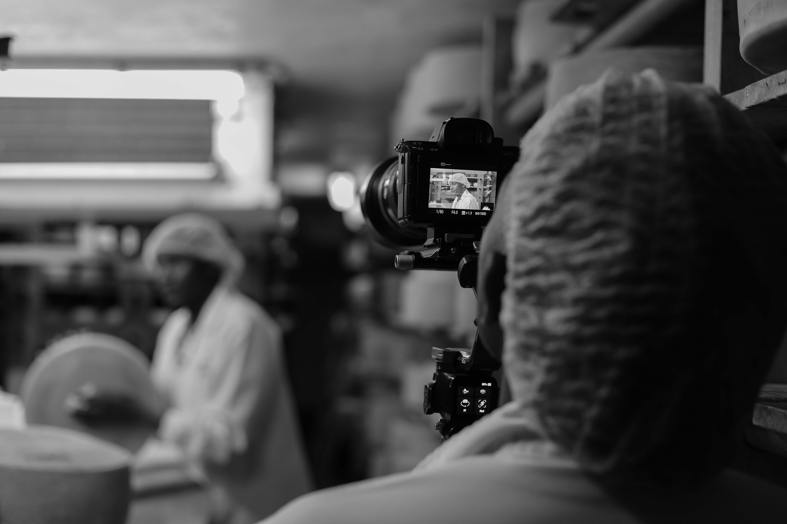
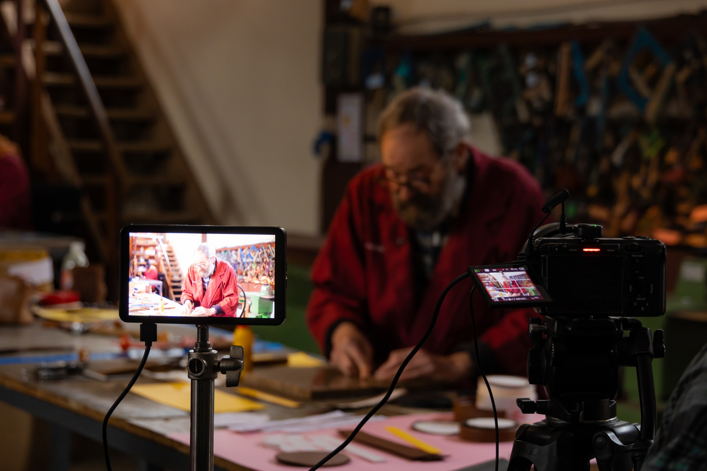
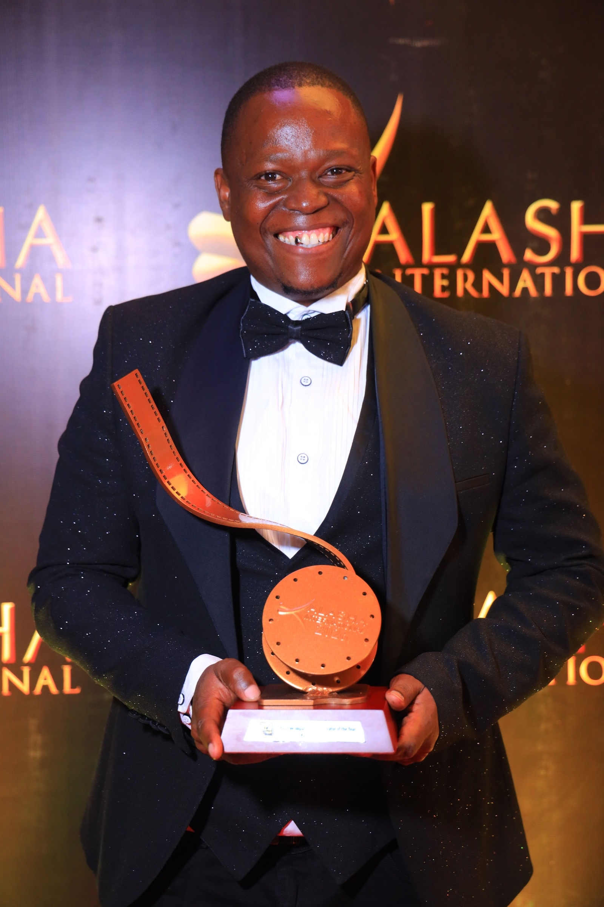
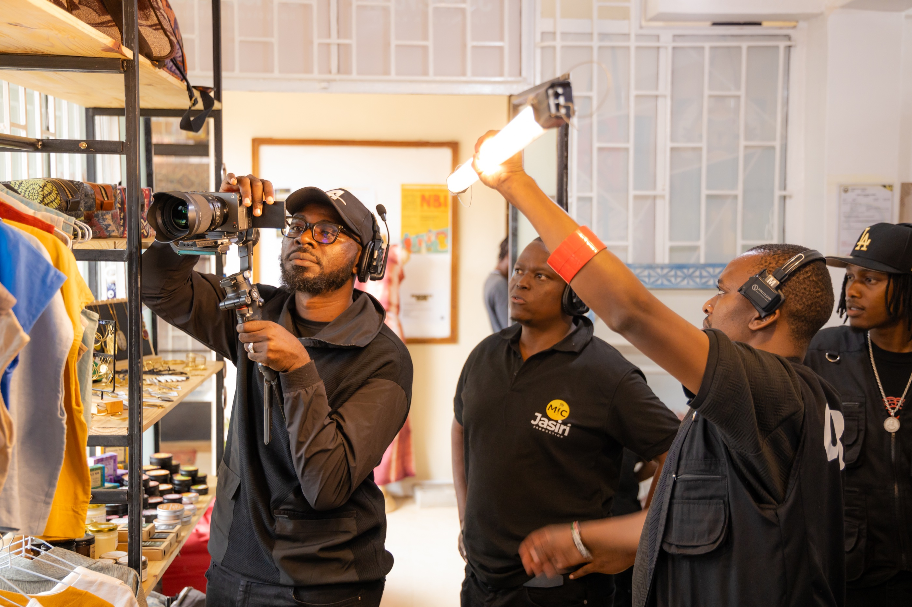

Featured Campaign
Featured CampaignShell Club Surprises Campaign
High-profile commercial brand campaign produced for Shell Club, engaging audiences nationwide through dynamic on-location storytelling.

A Nairobi production company built on hands-on film, television and commercial experience.
Mic-Jasiri Productions is a registered limited liability production company based in Nairobi, Kenya, founded in 2019. We work from audiovisual strategy and concept development through filming, editing, graphic design and live stream production.
Our work spans video production, television commercials, event live streaming and conference coverage, with each production shaped around the client, the audience and the story.


Founder & CEO | Executive Producer
Ali Sisei is the Founder and CEO of Mic-Jasiri Productions, bringing over 10 years of experience across Kenya’s creative, media, and production industry.
As Managing Director and creative leader, Ali has led multidisciplinary production teams, managed complex budgets and schedules, and overseen projects from concept to final delivery. His leadership approach combines creative ambition with commercial discipline, ensuring every production is delivered with clarity, accountability, and purpose.
High-impact film, television productions, and commercial campaigns produced and managed across East Africa.
Featured CampaignHigh-profile commercial brand campaign produced for Shell Club, engaging audiences nationwide through dynamic on-location storytelling.
NBA award-winning short film celebrating resilience, community impact, and the transformative power of sport in Kenya.
Hit television series produced with full end-to-end production management, scheduling, and high-standard broadcast delivery.
Celebrated reality TV series steering narrative storylines, episodic content pacing, and comprehensive line production logistics.
Widely acclaimed East African adaptation of the international dating format, produced for major regional broadcast networks.
Cross-border production management leading technical crews, casting operations, and multi-location field shoots across Uganda.
A compact look at the people, sets and finished frames behind Mic-Jasiri productions.




We bring your vision to life by staying true to who we are — grounded in authenticity, driven by bold innovation, and fuelled by courageous creativity. Every frame we craft is a testament to our pursuit of excellence. We push boundaries so every story empowers our clients and their audience, creating a chain of inspiration that drives lasting success.
This is the foundation of what we deliver. Your trusted partner in visual storytelling.
To be the most trusted and innovative production house in Africa, inspiring and empowering brands with innovative visual solutions that engage audiences across the continent.
Lead in designing compelling visual solutions through insight, technology, and creative thinking, enabling brands to connect authentically with their audiences.